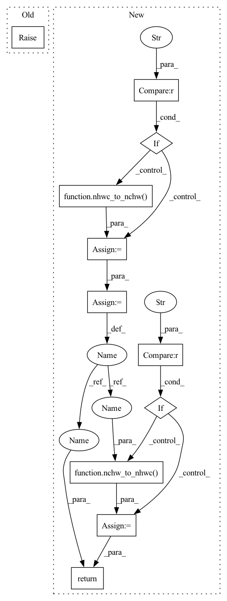

Pattern ID :12215

Before Change
self.data_format, self.padding = preprocess_1d_format(data_format, padding)
def __call__(self, input, filters):
raise NotImplementedError
def conv1d(input, filters, stride, padding, data_format="NWC", dilations=None):
After Change
self.data_format, self.padding = preprocess_1d_format(data_format, padding)
def __call__(self, input, filters):
if self.data_format == "NLC":
input = nhwc_to_nchw(input)
out = F.conv1d(input, filters, stride=self.stride, padding=self.padding, dilation=self.dilations)
if self.data_format == "NLC":
out = nchw_to_nhwc(out)
return out
def conv1d(input, filters, stride, padding, data_format="NWC", dilations=None):
In pattern: SUPERPATTERN
Frequency: 3
Non-data size: 11
Instances
Fragment ID: 41381140
Project Name: tensorlayer/tensorlayerx
Commit Name: c56905e7467dcfa40ab70eaaa1da551ad00ebb74
Time: 2022-03-17
Author: laicheng_vip@163.com
File Name: tensorlayerx/backend/ops/torch_nn.py
M Class Name: Conv1D
N Class Name: Conv1D
M Method Name: __call__(3)
N Method Name: __call__(3)
M Parent Class: object
N Parent Class: object
M File Name: tensorlayerx/backend/ops/torch_nn.py
N File Name: tensorlayerx/backend/ops/torch_nn.py
M Start Line: 417
M End Line: 417
N Start Line: 448
N End Line: 455
'>
Before Change
self.data_format = data_format
def __call__(self, inputs):
raise NotImplementedError
def resize(inputs, output_size, method, antialias):
After Change
self.data_format = data_format
def __call__(self, inputs):
if self.data_format == "channels_last":
inputs = nhwc_to_nchw(inputs)
outputs = F.interpolate(inputs, scale_factor=self.scale, mode=self.method, align_corners=self.antialias)
if self.data_format == "channels_last":
outputs = nchw_to_nhwc(outputs)
return outputs
def resize(inputs, output_size, method, antialias):
'>
Fragment ID: 41381139
Project Name: tensorlayer/tensorlayerx
Commit Name: c65412794b3c56405fd6268ed7314a6e6881912f
Time: 2022-03-10
Author: jiaronghan@outlook.com
File Name: tensorlayerx/backend/ops/torch_backend.py
M Class Name: Resize
N Class Name: Resize
M Method Name: __call__(2)
N Method Name: __call__(2)
M Parent Class:
N Parent Class:
M File Name: tensorlayerx/backend/ops/torch_backend.py
N File Name: tensorlayerx/backend/ops/torch_backend.py
M Start Line: 1089
M End Line: 1089
N Start Line: 1104
N End Line: 1109
'>
Before Change
self.dilations = dilations
def __call__(self, input, filter, point_filter=None):
raise NotImplementedError
def depthwise_conv2d(input, filter, strides, padding, data_format=None, dilations=None, name=None):
After Change
self.dilations = dilations
def __call__(self, input, filter, point_filter=None):
if self.data_format == "NHWC":
input = nhwc_to_nchw(input)
channel = input.shape[1]
depthwise_conv = F.conv2d(input, filter, bias=None, stride=self._stride, padding=self.padding,
dilation=self.dilations, groups=channel)
pointwise_conv = F.conv2d(depthwise_conv, point_filter, padding=self.padding)
if self.data_format == "NHWC":
pointwise_conv = nchw_to_nhwc(pointwise_conv)
return pointwise_conv
def depthwise_conv2d(input, filter, strides, padding, data_format=None, dilations=None, name=None):
'>
Fragment ID: 41381138
Project Name: tensorlayer/tensorlayerx
Commit Name: 2687cd485ddba198f0cdf99474a3bb67c06c367b
Time: 2022-03-23
Author: laicheng_vip@163.com
File Name: tensorlayerx/backend/ops/torch_nn.py
M Class Name: DepthwiseConv2d
N Class Name: DepthwiseConv2d
M Method Name: __call__(4)
N Method Name: __call__(4)
M Parent Class: object
N Parent Class: object
M File Name: tensorlayerx/backend/ops/torch_nn.py
N File Name: tensorlayerx/backend/ops/torch_nn.py
M Start Line: 1085
M End Line: 1085
N Start Line: 1096
N End Line: 1106